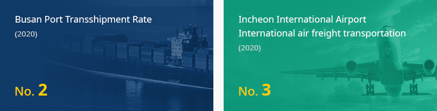
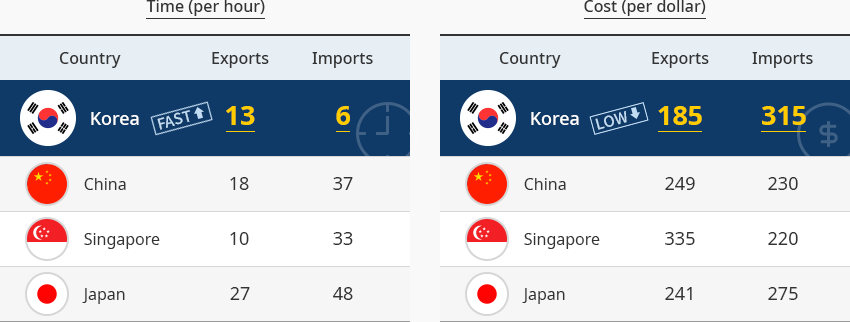
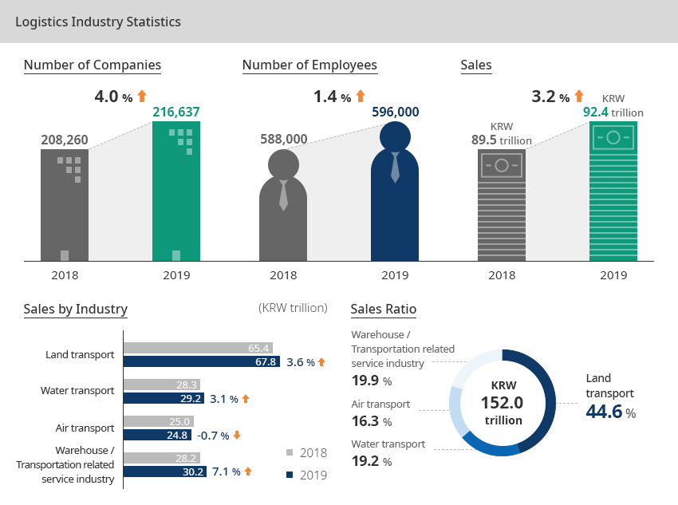
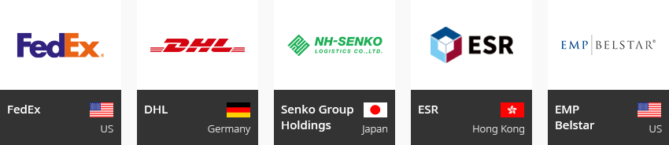
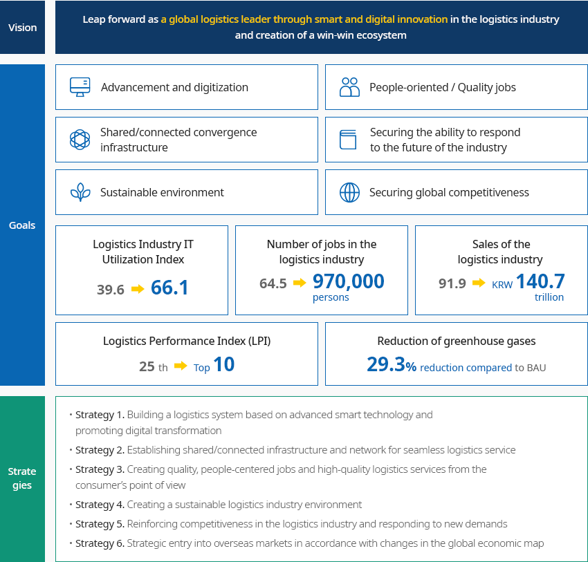
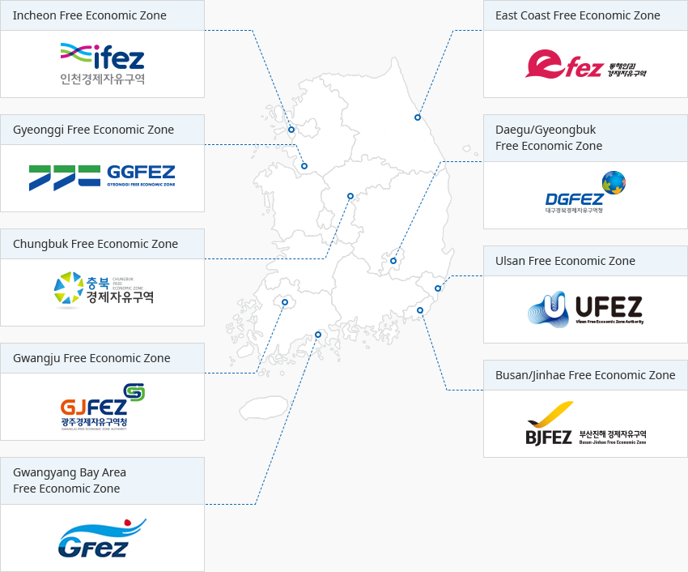

Logistics
- Home
- Why KOREA
- Industry
- Logistics
-
Broad and Fast Expandability of Korean Logistics CloseBroad and Fast Expandability of Korean LogisticsKorea is home to Busan Port, the world's second largest transshipment port, and Incheon International Airport, the world's third largest air freight forwarder. The time required for import and export is fast and the cost is low, making it easy for companies to trade."Major Logistics Infrastructure in Korea"
 ※ Source: Busan Port Authority(2020)
※ Source: Busan Port Authority(2020)
※ Source : Airports Council international (ACI) (2020)"Time and Cost for Import and Export"Time (per hour)Time for Import and Export Country, Exports, Imports Country Exports Imports Korea(fast) 13 6 China 18 37 Singapore 10 33 Japan 27 48 Cost (per dollar)Cost for Import and Export Country, Exports, Imports Country Exports Imports Korea(fast) 185 315 China 249 230 Singapore 335 220 Japan 241 275
※ Source : World Bank Group “Doing Business 2020 Report” -
Growth of Korea Growth of Korea Driven by Air and Water Transportation OpenGrowth of Korea Driven by Air and Water TransportationKorea's logistics industry grew rapidly in quantity until the 2000s, thanks to rapid economic growth and its export-oriented economic structure. In the 2000s, the industry grew in quality, thanks to the rise of the Chinese market and the government's investment in logistics infrastructure (Incheon International Airport, New Busan Port, Inland Logistics Base). In the case of domestic logistics, the freight car transport market is in charge of domestic logistics, and the rail freight market has a very weak structure, due to narrow land space and the disconnection of land routes from the Asian continent because of North Korea. On the other hand, international logistics are exclusively handled by air and shipping, and there is no railroad use.The international logistics industry centered on the metropolitan area (Incheon Port, Incheon International Airport) and the Busan area (Busan Port) has developed, thanks to Korea’s peninsular geography (three sides of the sea), the geopolitical location between China and Japan, and an export-oriented economy. In addition to the transportation network, logistics infrastructure, such as airports, ports, and inland logistics bases, is concentrated in the Metropolitan-Busan logistics belt.In 2019, the number of companies, the number of employees, and sales in Korea's logistics industry all increased compared to the previous year. The number of companies was 217,000, the number of employees was 596,000, and sales reached KRW 92.4 trillion. The number of companies (4.0%), the number of employees (1.4%), and sales (3.2%) all increased, thanks to an increase in the volume of goods, such as daily logistics, the expansion of logistics, and the establishment of logistics-related information systems. In the cargo transportation industry, the number of companies (4.3%↑), the number of employees (2.6%↑), and sales (2.3%↑) all increased compared to the previous year. In the logistics facility operation business, the number of companies (0.4%↑), the number of employees (2.5%↑), and sales (4.4%↑) all increased. The number of logistics-related service companies (12,000) and the number of employees (85,000) decreased by 0.2% and 6.0%, respectively, while sales (KRW 17.1 trillion) increased by 5.2%."Korea’s Logistics Industry"Logistics Industry Statistics
- Number of Companies - 2018(208,260) → 2019(216,637) 4.0% increase
- Number of Employee - 2018(588,000) → 2019(596,000) 1.4% increase
- Sales - 2018(KRW 89.5 trillion) → 2019(KRW 92.4 trillion) 3.2% increase
-
Sales by Industry
- Land transport - 2018(65.4) → 2019(67.8) 3.6% increase
- Water transport - 2018(28.3) → 2019(29.2) 3.1% increase
- Air transport - 2018(25.0) → 2019(24.8) -0.7% decrease
- Warehouse / Transportation related service industry - 2018(28.2) → 2019(30.2) 7.1% increase
-
Sales Ratio(KRW 152 trillion )
- Land transport 44.5%
- Water transport 19.2%
- Air transport 16.3%
- Warehouse / Transportation related service industry 19.9%
※ Source: Statistics Korea, press release; 2019 Transport Industry Survey (provisional) (including logistics industry statistics), December 2020 -
Various Types of Logistics Businesses In Korea OpenPromotion of Various Logistics Businesses in KoreaForeign direct investment in Korea's logistics and distribution industry was USD 1.83 billion in 2020. Foreign direct investment in transportation and warehouse (logistics) increased by 38.7% compared to the previous year, out of which 92% was greenfield investment. A number of countries, including Hong Kong, the US, China, Singapore, Germany, and the UAE, have entered Korea.Foreign direct investment in Korea's logistics industry (transportation and warehouse) was USD 6.32 million with 44 cases in 2020. The total amount raised over the past seven years has reached USD 3.15 billion. The investment scale has shown some fluctuations as it is affected by the investment attraction environment (policy, facility, market size) of neighboring countries as well as the economic conditions inside and outside the country.
From 2011 to 2013, the amount was as low as USD 66 million to USD 143 million, but over the past seven years, it has risen sharply to USD 300 to 600 billion, showing a clear stabilization trend at the same level. In terms of the investment scale (based on the reported amount) by investment type, the M&A type accounted for 17%, while the greenfield type accounted for an absolute proportion of 83%.
-
Foreign Direct Investment In the Logistics Industry OpenForeign Direct Investment In the Logistics Industry"Foreign Direct Investment in the Logistics (Transportation/Warehouse) Industry (based on reported amount)"(Unit: no. of cases, USD 1,000)
Foreign Direct Investment in the Logistics (Transportation/Warehouse) Industry (based on reported amount) Category, Year, Total Category 2014 2015 2016 2017 2018 2019 2020 Total Investment Scale Cases Total 53 81 59 57 58 52 44 404 Under USD million 38 57 44 36 40 30 30 275 USD 1 million ~
USD 10 million11 18 10 21 13 17 4 94 USD 10 million ~
USD 100 million3 5 4 1 4 4 8 29 Over USD 100 million 1 2 1 2 1 1 2 10 Amount Total 412,051 667,334 349,090 294,100 344,345 455,763 632,296 3,154,979 Under USD million 26,331 25,851 20,510 17,908 15,938 12,713 13,767 133,018 USD 1 million ~
USD 10 million56,572 124,817 47,689 110,615 94,767 118,413 20,666 573,548 USD 10 million ~
USD 100 million261,200 184,000 180,400 54,000 377,986 450,400 430,159 1,938,145 Over USD 100 million 480,000 1,000,000 449,572 405,676 200,000 330,000 800,000 3,665,248 Investment Type Cases Total 53 81 59 57 58 52 44 404 M&A 5 10 14 7 4 12 9 61 Greenfield 48 71 45 50 54 40 35 343 Amount Total 412,051 667,334 349,090 294,100 344,345 455,763 632,296 3,154,979 M&A 5,568 13,128 299,438 110,136 7,408 15,030 70,855 521,563 Greenfield 406,483 654,205 49,652 183,964 336,937 440,733 561,441 2,633,415 ※ Source: Ministry of Trade, Industry and Energy, Foreign Investment StatisticsThe country that made the most investment (based on reported amount) in the Korean logistics industry over the past seven years (2014-2020) was the US (USD 1.70 billion), followed by Singapore (USD 340 million), China (USD 308 million), the Netherlands (USD 247 million), the Virgin Islands (USD 142 million), Hong Kong (USD 69 million), and Japan (USD 67 million). Investment made by these seven countries accounted for 91.3% of the total investment in the domestic logistics industry.In terms of the investment scale, the US has invested USD 300 million for two consecutive years since 2019, followed by China with USD 100 million."Foreign Direct Investment in Domestic Logistics Industry by Major Countries (based on reported amount)"(Unit : cases, USD 1,000)Foreign Direct Investment in Domestic Logistics Industry by Major Countries (based on reported amount) Category, Year, Total Category 2014 2015 2016 2017 2018 2019 2020 Total US Cases 5 14 6 10 12 10 7 64 Amount 256,142 520,799 6,846 114,935 173,524 305,415 325,824 1,703,485  Japan
Japan
Cases 11 13 12 9 8 2 1 56 Amount 12,827 13,325 9,371 18,186 10,240 3,642 235 67,825  China
China
Cases 10 14 14 11 5 7 7 68 Amount 4,628 2,629 6,623 1,613 101,553 90,074 101,061 308,181  Hong Kong
Hong Kong
Cases 6 8 8 6 6 13 8 55 Amount 1,743 46,809 6,216 7,721 1,982 4,031 1,047 69,549  Singapore
Singapore
Cases 6 8 5 6 6 5 7 43 Amount 9,230 40,125 70,890 105,352 18,920 6,928 89,163 340,608 Netherlands Cases 1 1 1 1 3 0 0 7 Amount 870 8,434 224,786 217 13,095 0 0 247,402 Virgin Island Cases 2 1 1 4 7 3 0 18 Amount 115,600 302 116 9,960 13,007 3,561 0 142,545 ※ Source: Ministry of Trade, Industry and Energy, Foreign Investment Statistics -
Logistics Innovation Policies to Create New Industries OpenLogistics Innovation Policies to Create New IndustriesKorea's logistics policies and detailed action items are being prepared in accordance with the National Logistics Master Plan (10 years).
According to the National Logistics Master Plan (2021-2030) announced in July 2021, Korea has six major strategies aimed at establishing itself as a leading global logistics nation through smart and digital innovation in the logistics industry and the creation of a win-win ecosystem.Vision - Leap forward as a global logistics leader through smart and digital innovation in the logistics industry and creation of a win-win ecosystemGoals- Advancement and digitization
- People-oriented / Quality jobs
- Shared/connected convergence infrastructure
- Securing the ability to respond to the future of the industry
- Sustainable environment
- Securing global competitiveness
- Logistics Industry IT Utilization Index : 39.6 → 66.1
- Number of jobs in the logistics industry : 64.5 → 970,000 persons
- Sales of the logistics industry : 91.9 → KRW 140.7 trillion
- Logistics Performance Index (LPI) : 25th → Top 10
- Reduction of greenhouse gases : 29.3% reduction compared to BAU
Strategies- Strategy1. Building a logistics system based on
- Strategy2. Establishing shared/connected infrastructure and network for seamless logistics service
- Strategy3. Creating quality, people-centered jobs and high-quality logistics services from the consumer’s point of view
- Strategy4. Creating a sustainable logistics industry environment
- Strategy5. Reinforcing competitiveness in the logistics industry and responding to new demands
- Strategy6. Strategic entry into overseas markets in accordance with changes in the global economic map
※ Source: Ministry of Land, Infrastructure and Transport, National Logistics Master Plan (2021-2030), July 2021 -
Free Economic Zones and Free Trade Zones Logistics Clusters OpenFree Economic Zones and Free Trade Zones Logistics ClustersSeven inland logistics bases and complex logistics terminals, which serve as bases in the national logistics system, are in operation in five major regions (the metropolitan area, Busan area, central area, Honam area, and Yeongnam area). A total of 30 logistics complexes for shippers and specialized logistics companies have been designated and are in operation nationwide (total area: 12 million ㎡).Most logistics companies are distributed around free economic zones and free trade zones, where benefits, such as duty drawback, tax reduction and exemption, and infrastructure, are available.
Starting with Incheon in 2003, a total of nine areas have been built and are in operation, Busan/Jinhae, Gwangyang Bay Area, Gyeonggi, Incheon, Daegu/Gyeongbuk, Chungbuk, the East Coast Area, Gwangju, and Ulsan. A total of 6,025 domestic and foreign logistics companies entered free economic zones (as of 2020), and logistics and clusters are formed in Incheon, Busan-Jinhae, and Gwangyang Bay, where international logistics ports are located."Major Logistics Locations and Ports in Korea"- Incheon Free Economic Zone
- East Coast Free Economic Zone
- Gyeonggi Free Economic Zone
- Daegu/Gyeongbuk Free Economic Zone
- Chungbuk Free Economic Zone
- Ulsan Free Economic Zone
- Gwangju Free Economic Zone
- Busan/Jinhae Free Economic Zone
- Gwangyang Bay Area Free Economic Zone
※ Source: Free Economic Zone (http://www.fez.go.kr) [Go to the website]
※ Data also provided by: Korea Transport Institute


Invest KOREA
Recommendation on Locations
Industrial complex information
[Busan Metropolitan City Gangseo-gu] Busan New Port Backward International
Industrial Logistic City (Stage 1) General Industrial Complex (Busan Jinhae Free Economic
Zone)
Click [Go to Detailed Information] to go to the relevant information screen of
Smart K-Factory service of Industrial Complex Corporation.
-
Complex nameBusan New Port Backward International Industrial Logistic City (Stage 1) General Industrial Complex (Busan Jinhae Free Economic Zone)
-
Initial designation date2010.03.03
-
Designated area(m2)5,707,591
-
ManagementBusan-Jinhae Free Economic Zone Authority
-
Nearby RailwayBusan Station
-
Distance from station(km)26
-
Nearby AirportGimhae International Airport
-
Distance from airport(km)19
-
Industrial water Supply capacity(ton/day)20479(㎥/day)
-
Affiliation local governmentBusan Metropolitan City Gangseo-gu
-
Population3,401,078
Industrial complex information
[Incheon Metropolitan City Bupyeong-gu] Korea Export (Bupyeong
District)
Click [Go to Detailed Information] to go to the relevant information screen of
Smart K-Factory service of Industrial Complex Corporation.
-
Complex nameKorea Export (Bupyeong District)
-
Initial designation date1965.06.16
-
Designated area(m2)609,361
-
ManagementKorea Industrial Complex Corporation
-
Nearby RailwayBupyeong Station
-
Distance from station(km)5
-
Nearby AirportGimpo International Airport
-
Distance from airport(km)14
-
Industrial water Supply capacity(ton/day)384000(㎥/day)
-
Affiliation local governmentIncheon Metropolitan City Bupyeong-gu
-
Population2,943,491
Industrial complex information
[Incheon Metropolitan City Seo-gu, Nam-gu, Bupyeong-gu] Korea Export(Juan
District)
Click [Go to Detailed Information] to go to the relevant information screen of
Smart K-Factory service of Industrial Complex Corporation.
-
Complex nameKorea Export(Juan District)
-
Initial designation date1969.08.05
-
Designated area(m2)1,176,829
-
ManagementKorea Industrial Complex Corporation
-
Nearby RailwayBupyeong Station
-
Distance from station(km)7
-
Nearby AirportGimpo International Airport
-
Distance from airport(km)25
-
Industrial water Supply capacity(ton/day)250000(㎥/day)
-
Affiliation local governmentIncheon Metropolitan City Seo-gu, Nam-gu, Bupyeong-gu
-
Population2,943,491
Industrial complex information
[Chungcheongbuk-do Eumseong County] Oseon Industrial Complex
Click [Go to Detailed Information] to go to the relevant information screen of
Smart K-Factory service of Industrial Complex Corporation.
-
Complex nameOseon Industrial Complex
-
Initial designation date2014.04.11
-
Designated area(m2)459,481
-
ManagementChungcheongbuk-do Eumseong County
-
Nearby RailwayEumseong Station
-
Distance from station(km)19
-
Nearby AirportCheongju International Airport
-
Distance from airport(km)43
-
Industrial water Supply capacity(ton/day)871(㎥/day)
-
Affiliation local governmentChungcheongbuk-do Eumseong County
-
Population94,179
Industrial complex information
[Gyeonggi-do Uiwang City] Uiwang Techno Park
Click [Go to Detailed Information] to go to the relevant information screen of
Smart K-Factory service of Industrial Complex Corporation.
-
Complex nameUiwang Techno Park
-
Initial designation date2016.12.28
-
Designated area(m2)158,708
-
ManagementGyeonggi-do Uiwang City
-
Nearby RailwaySuwon Station
-
Distance from station(km)10
-
Nearby AirportGimpo International Airport
-
Distance from airport(km)39
-
Industrial water Supply capacity(ton/day)754(㎥/day)
-
Affiliation local governmentGyeonggi-do Uiwang City
-
Population162,751
Industrial complex information
[Gangwon-do Donghae City] Bukpyeong 2nd General Industrial Complex
Click [Go to Detailed Information] to go to the relevant information screen of
Smart K-Factory service of Industrial Complex Corporation.
-
Complex nameBukpyeong 2nd General Industrial Complex
-
Initial designation date2013.10.14
-
Designated area(m2)598,964
-
ManagementGangwon-do Donghae City
-
Nearby RailwayChuam Station
-
Distance from station(km)1
-
Nearby AirportYangyang International Airport
-
Distance from airport(km)93
-
Industrial water Supply capacity(ton/day)2,153(㎥/day)
-
Affiliation local government2,153
-
Population90,548